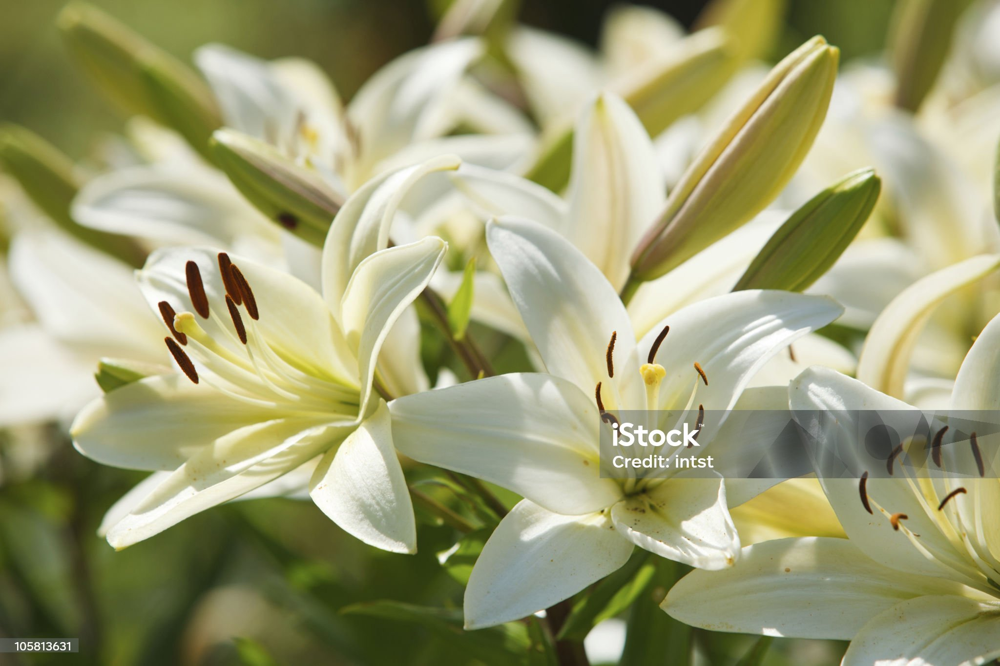

Flowers are part of the most important occasions of life and have a language of their own.
They are exotic and are used to express your feelings and convey intense emotions in a meaningful way that words cannot. There are also beautiful flowers befitting specific occasions like birthdays, funerals, weddings, graduation ceremonies, etc.
Some flowers have a religious significance, too.
Flowers’ meanings and symbolization were a key element many years ago. During the Victorian era, special meanings were assigned to various flowers to send out coded messages and allowed individuals to express feelings that could not be spoken.
This practice, called floriography, is still alive and thriving today.
Every sentiment can be expressed in one form or the other by these fragile blooms.
Read on further to know more about different flower meanings and their symbolism.
Below listed are some of the most beautiful and colorful flowers that will steal and melt you heart at the same time!
| table practical | ||
|---|---|---|
| S.NO | Picture | description |
| 1 |  |
A woody perennial shrub with a prominent flower known for its beauty, fragrance, and diverse colors like red, pink, yellow, and white |
| 2 |  |
a woody perennial shrub or vine of the genus Rosa, known for its fragrant flowers and often thorny stemse |
| 3 |  | The true lilies are erect perennial plants with leafy stems, scaly bulbs, usually narrow leaves, and solitary or clustered flowers |